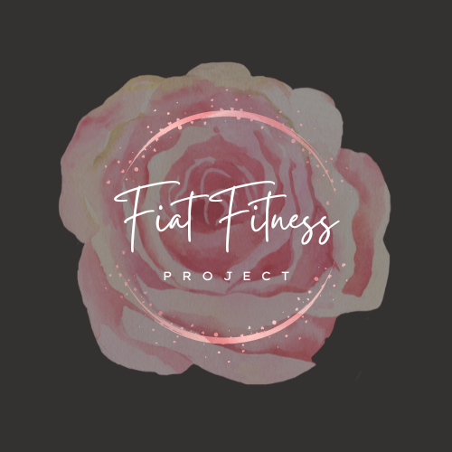
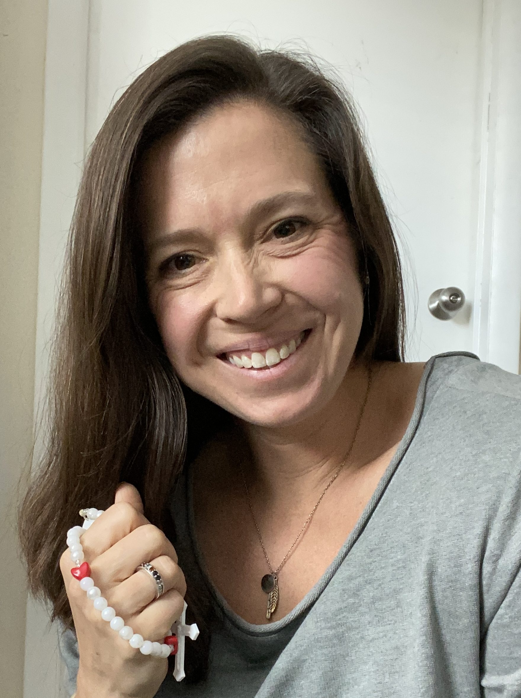

Fiat Fitness Workouts
Purposeful circuits that pair prayer, movement, breath, and reflection.
View membership
Fiat Fitness Project Grow stronger physically and spirituallyContemplative, high-energy workout programs
Combine prayer, movement, strength, and intentional routines so your fitness journey can support the work you are called to do.
Free sample
A simple rhythm for prayer, movement, reflection, recovery, and growth.

Fiat Fitness Project membership
Wherever you are on your fitness journey and in your faith, there are programs and resources to help you grow stronger physically and spiritually.
Choose rosary workouts, coaching, courses, recovery support, and planning tools that help you use your gifts with peace and purpose.
Purposeful circuits that pair prayer, movement, breath, and reflection.
View membershipOne-on-one support for health habits, routines, mindset, and goals.
View coachingCore-centered sessions for posture, flexibility, prayer, and control.
View programProgressive workouts for confidence, muscle, and functional power.
View programGentle training for joint-friendly movement and sustainable energy.
View programSupportive sessions for safe strength, stability, and recovery.
View packageBreathing, alignment, and strength foundations for rebuilding well.
View programA calm daily framework for workouts, meals, priorities, and rest.
View plannerFull site directory
This section mirrors the public structure of Fiat Fitness Project: core program pages, course offers, monthly rosary workout series, free resources, membership pages, and account links.
Membership overview
Access rosary workouts that strengthen you physically and spiritually. The membership includes multiple styles for the Joyful, Sorrowful, Glorious, and Luminous mysteries, plus program paths for low-impact, lifting, pilates, prenatal, postpartum, active rest, family workouts, and more.
Choose your focus
Select a goal and get a simple starting point for movement, strength, and recovery.
Walk briskly or cycle easily for 25 minutes to wake up your body and lift your mood.
Complete 3 rounds of squats, planks, and incline push-ups with calm rest between sets.
Stretch hips, back, and neck before bed to help your nervous system slow down.
Welcome
Fiat Fitness Project is built for people who want workouts, community, prayer, and practical routines to work together. The goal is to help you reflect, build strength, and grow with peace.
"May this help you strengthen your relationship with Christ while strengthening your physical body and confidence."Join the Fiat Fitness Family
What people are saying
"The workouts feel focused and peaceful. I finish stronger, not scattered."
"The accountability helped me make fitness and prayer part of my real life again."
Contact us
Send a note and we will point you toward a simple next step.